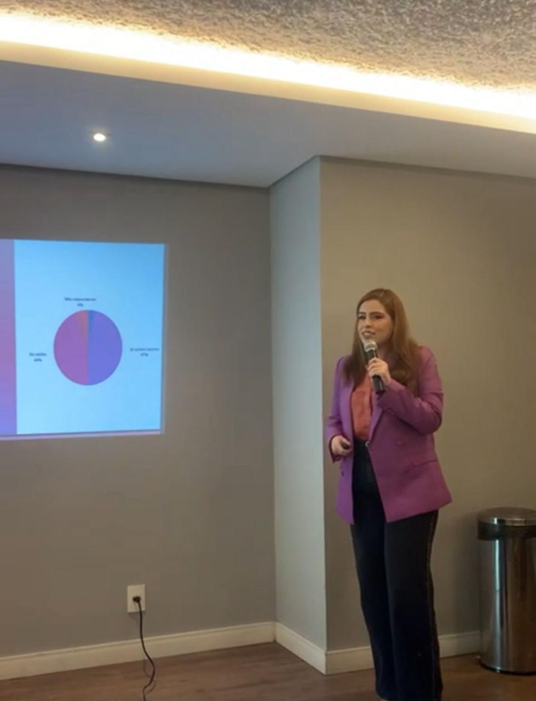

Cuidar da sua história é o meu propósito.
Você sente que seus relacionamentos estão desgastados? Ou talvez você esteja carregando sozinha o peso da ansiedade, do estresse, da tristeza, sem saber como lidar com tudo isso?.
 Quero agendar uma sessão
Quero agendar uma sessão
Você sente que seus relacionamentos estão desgastados? Ou talvez você esteja carregando sozinha o peso da ansiedade, do estresse, da tristeza, sem saber como lidar com tudo isso?.
Quero agendar uma sessão
Sou Virgínia, uma mulher que, desde muito cedo, descobriu que a sua maior paixão era o outro: suas histórias, suas pausas e seus dizeres. Com 8 anos de caminhada na psicologia, aprendi que cada sessão é, na verdade, a criação de uma nova arte feita a quatro mãos.
A terapia é, antes de tudo, um compromisso com você. No meu consultório, o foco não é apenas o alívio imediato dos sintomas, mas a compreensão profunda de como você se relaciona com o mundo e com as suas próprias emoções.
CRP 02/22005
Psicóloga Clínica
Especialista em Psicanalise
Você entra em contato comigo via WhatsApp para agendar sua primeira sessão no horário que melhor se encaixa na sua rotina.
Nos encontramos online em um espaço seguro e sigiloso para conversar sobre seus objetivos e o que você busca alcançar com a terapia.
Trabalhamos juntos em sessões regulares, explorando suas emoções, padrões de comportamento e construindo caminhos para transformação.
Ao longo das sessões, acompanhamos de perto sua evolução, ajustando as estratégias conforme suas necessidades e celebrando cada conquista.
Com o tempo, você desenvolve maior autoconhecimento, clareza emocional e ferramentas práticas para viver com mais leveza e autenticidade.
Mostrando Um Pouco do Meu Trabalho.
